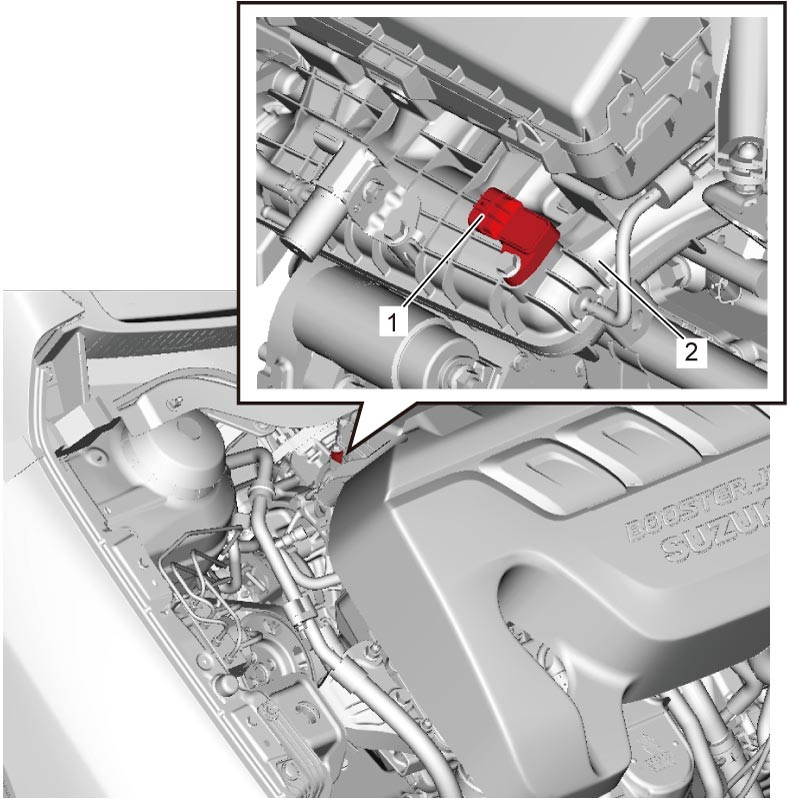

1C
| MAP Sensor Removal and Installation |
Removal
1)Disconnect negative (–) cable at battery.
2)Disconnect connector from MAP sensor.
3)Remove MAP sensor (1) from intake manifold (2).


 "Expand image")
Installation
Reverse removal procedure noting the following points.
 "Expand image")